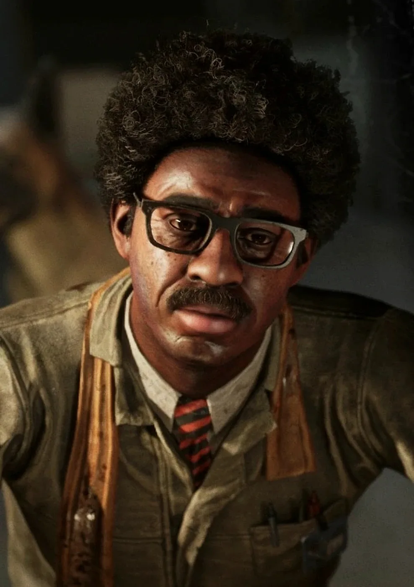

Корнелиус Ноукс
Сотрудник Меркофф | Инженер
Локация: Комната отдыха
Роль: Улучшение снаряжения реагентов
Корнелиус Ноукс (ориг. Cornelius Noakes) — персонаж игры The Outlast Trials, инженер для реагентов на объекте Синьяла.
Биография
В сороковых годах Корнелиус Ноукс был участником Второй мировой войны, где служил инженером Военно-воздушных сил, и ему даже удалось поучаствовать в Тихоокеанском театре военных действий, где он воевал в Атту. На войне, как и другие ветераны, он повидал много ужасов и страданий, но к счастью ему удалось вернуться домой во Франклин Лейкс.
Работа на Синьяле
Вскоре в августе 1958 года Ноукс решает поработать пару месяцев на какой-нибудь работе, чтобы подзаработать денег, и ему удаётся найти интересный для себя вариант. Однако это стало большой ошибкой, поскольку Корнелиус был завербован корпорацией Меркофф, сотрудники которой искали инженера во время их проекта «Тенева 2». В самолёте Ноукс был оглушён, похищен и доставлен в пустыню Аризоны, где находился сверхсекретный объект Синьяла. У Корнелиуса остались на свободе невеста и брат Ламар, которые вероятно так и не узнали, что случилось с Ноуксом.
Корнелиус Ноукс становится инженером для испытуемых реагентов, где сотрудники Меркофф запирают его в мастерской в комнате отдыха. Ноуксу пришлось разбираться со всей техникой проекта, и он прекрасно понимал, что реагенты, которым директор проекта Хендрик Истерман пообещал свободу после испытаний, никак не получат её. Основной задачей Корнелиуса Ноукса была поддержка «П.С.И.Х.», прибора со специальными исследовательскими характеристиками. Реагенты практически постоянно обращались к Ноуксу, чтобы тот сделал или улучшил их снаряжение. Инженер не хотел привязываться к реагентам, поскольку понимал, что по ходу эксперимента с этими людьми могут произойти ужасные изменения. Однако он всегда был с ними дружелюбен и желал им только добра, поскольку они были такими же жертвами Меркофф, как и он сам. Но вероятней всего Ноукс не хотел как-то контактировать с реагентами из-за того, что он боялся, поскольку сотрудники Меркофф могут сделать с ним что-нибудь плохое. Единственным своим другом он считал неживое чучело собаки Танго, которое стояло у него в мастерской.
По мере длительного проведения на объекте Синьяла у инженера совсем сломился дух и воля к общению, однако он чётко поклялся не лишать себя жизни, как это по мнению Ноукса сделал его предшественник Сесил Майерс. В какой-то момент сотрудники Меркофф замечают, что на испытаниях главный актив Лиланд Койл с помощью своей электрической дубинки может временно выводить из строя «П.С.И.Х.», а значит и снаряжение реагентов. Архитектор объекта Мозес Скарфиотти посчитал, что это проблема Ноукса, который с помощью своих инженерных навыков должен разобраться с этим. Корнелиус конечно не особо горел желанием разбираться с устройствами, однако Скарфиотти пригрозил ему тем, что в Меркофф людей не увольняют.
День благодарения
В конце ноября 1959 года директор исторических изысканий Клайд Перри разбирался с утечкой документов, которые каким-то образом оказались разбросанными на полигонах испытаний. Он начинает своё расследование, и ему удаётся узнать, что документ про Ночного Охотника недавно брался Корнелиусом Ноуксом. Поскольку данный документ был единственным, который не попал под утечку, Перри решает допросить инженера.
Корнелиус попытался объяснить Перри, что брал документ, чтобы разобраться со сложными устройствами данного экс-попа, чем удовлетворяет сотрудника Меркофф. Когда Клайд Перри уже собирался покинуть помещение, Ноукс попросил того сказать текущую дату, на что сотрудник Меркофф ответил, что сейчас День благодарения 1959 года и поздравил его. Когда Клайд Перри покидает комнату, инженер Корнелиус Ноукс остался сидеть в помещении и отчаянно плакать.
Обратный отсчёт
В марте 1960 года на объекте Синьяла началась временная программа «Обратный отсчёт», где на испытаниях на реагентов надевали бомбы с таймером. Доктор Истерман и Мозес Скарфиотти обратились к Ноуксу за помощью, поскольку из-за бомбы на сигналы «П.С.И.Х» шли помехи. Корнелиус понимал, что они имеют дело со взрывчаткой, говоря, что он не подписывался убивать людей. Однако Истерман начал утверждать Ноуксу, что если бы он видел, что реагенты делают на испытаниях, то не особо жалел бы их. Именно в тот момент Хендрик Истерман узнаёт от Скарфиотти, что развёлся со своей женой Ирен ещё несколько месяцев назад.
Радио
11 апреля 1960 года реагенту Амелии Кольер удаётся сбежать с области испытания, и после этого на полигоне было поставлено радио со странным сообщением. В итоге Корнелиус Ноукс забирает это радио, опередив охрану Меркофф, чем вызвал вопросы со стороны архитектора Скарфиотти. 15 апреля Мозес наведывается к Корнелиусу Ноуксу и начинает расспрашивать его о радио, однако инженер сказал, что взял его для починки. Ноукс полностью разобрал радио и сжёг плёнку, объясняя это тем, что он разбирает на запчасти то, что не подлежит ремонту. Скарфиотти хотел узнать, зачем Ноукс уничтожил плёнку, но инженер задал встречный вопрос, что зачем на Синьяле вообще что-то делается.
The Outlast Trials
Корнелиус Ноукс сидит за столом в своей мастерской в комнате отдыха и практически постоянно разбирается в различных механизмах, выжидая новых реагентов, которые обратятся к нему за помощью. Ноукс способен за ваучеры, которые реагент получает за повышение своего уровня, создать и в дальнейшем улучшать снаряжения для испытуемых.
Галерея


Интересные мелочи
- Мастерская Ноукса в комнате отдыха отделена от других сотрудников Меркофф, что вероятно является результатом расовой дискриминации, которая была гораздо более нормализована во время действий игры.
- По словам Корнелиуса, отец бросил его и брата Ламара.
- За время нахождения в Синьяле инженер Ноукс потерял счёт времени, поскольку даже не знает, какой в данный момент год. Все газеты, принесённые Ноуксу, были датированы 1956 годом.
- Корнелиус Ноукс и Лиланд Койл являются ветеранами Второй мировой войны, и они оба служили в Тихоокеанском театре военных действий, однако отличием являются место и вид войск.
- Предшественником Ноукса в качестве инженера для реагентов в Синьяле был некий Сесил Майерс, который возможно покончил с собой.
- У Корнелиуса была собака по кличке Танго, которая умерла незадолго до его похищения сотрудниками Меркофф.
- Ноукс утверждает, что был свидетелем того, как один из учёных Синьялы плакал.